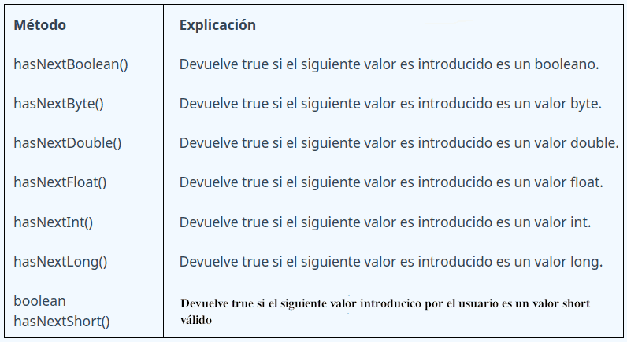
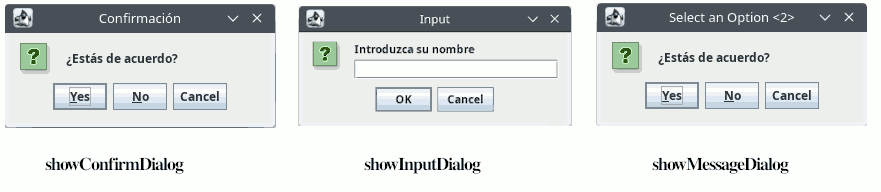

En la majoria d'aplicacions, es presenta la possibilitat a l'usuari d'introduir dades al programa (entrada), el qual els processarà i emprarà per a realitzar determinades accions que finalment aportaran uns resultats els quals seran mostrats (eixida) a l'usuari de l'aplicació.
En la majoria d'aplicacions, es presenta la possibilitat a l'usuari d'introduir dades al programa (entrada), el qual els processarà i emprarà per a realitzar determinades accions que finalment aportaran uns resultats els quals seran mostrats (eixida) a l'usuari de l'aplicació.

L'entrada de dades a un programa, es pot obtindre de diferents formes:
- A partir dels valors inserits des de la consola per part de l'usuari del programa.
- A partir dels valors inserits des d'un formulari per part de l'usuari del programa..
- Des d'un fitxer
- Des d'una base de dades
- A partir de les dades obtingudes per un sensor (sensor de moviment, infrarojos, ultrasons, humitat, etc.)
En Java es defineix el concepte de stream (flux), que és una abstracció per a tractar la comunicació d'informació entre el programa i l'exterior. Els streams són fluxos seqüencials de bytes.
- Perquè un programa puga llegir dades d'alguna font, ha de crear un stream d'entrada connectat a aquest (teclat, fitxer, ...).
- Per a escriure dades cap a un destí, ha de crear un stream d'eixida connectat a aquest (pantalla, fitxer, ...).
- Java proporciona diferents classes per al maneig d'aquests fluxos d'informació, totes elles contingudes en el paquet java.io
Els fluxos actuen com a interfície amb el dispositiu o classe associada. Els avantatges d'interpretar l'E/S així són
- Operació independent del tipus de dades i del dispositiu
- Major flexibilitat (p.e. redirecció, combinació).
- Diversitat de dispositius (fitxer, pantalla, teclat, xarxa, …)
- Diversitat de formes de comunicació
- Mode d'accés: seqüencial, aleatori
- Informació intercanviada: binària, caràcters, línies
A Java tenim:
- System.in -> Entrada estàndar ( objecte de la classe InputStream ).
Per defecte l'entrada estàndard està associada al teclat. Alguns mètodes útils són:
• read() -> permet llegir un byte de l'entrada com a enter
• skip( n ) -> ignora n bytes de l'entrada
• available() -> nombre de bytes disponibles per a llegir en l'entrada
- System.out -> Eixida estàndar ( objecte de la classe PrintStream ).
Per defecte l'Eixida estàndard està associada a la pantalla. Alguns mètodes útils són:
• print(paràmetre) -> Escriu en pantalla el contingut de paràmetre.
• println(paràmetre) -> Escriu en pantalla el contingut de paràmetre. En finalitzar canvia de línia.
• flush() -> buida el buffer d'eixida escrivint el seu contingut
- System.err ->Eixida d'error ( objecte de la classe PrintStream ).
S'utilitza per a enviar missatges d'error. És habitual que es trobe associat per defecte a la consola.
import java.io.*;
class LecturaDeLinea {
public static void main( String args[] ) throws IOException {
int c;
int contador = 0;
// es llig fins a trobar la fi de línia
while( (c = System.in.read() ) != '\n' ) {
contador++;
System.out.print( (char) c );
}
System.out.println(); // S'escriu la fi de línia
System.err.println ( "Contados "+ contador +" bytes en total." );
}
}
Fixa't que per a la classe System no es creen objectes. De fet, no es poden crear objectes de la classe System. Per accedir als seus atributs o mètodes es posa el nom de la classe seguit d'un punt i el nom de l'atribut o mètode.
Entrada per consola utilitzant Scanner
Llegir byte a byte no és precisament còmode, per eixe motiu es va crear la classe Scanner, dins del paquet java.util, que proporciona mètodes per a llegir tipus de dades byte, short, int, long, float, double i String des de la consola Java.
El primer que hem de fer és importar la classe Escàner al nostre programa: import java.util.Scanner;
A continuació cal crear un objecte de tipus Scanner i associar-lo a una entrada de dades, per exemple l'entrada estàndard:
Scanner sc = new Scanner(System.in);
Alguns mètodes de la classe Scanner són:
| Métode | Explicació |
| boolean nextBoolean() |
Llig valors lògics booleans introduïts per l'usuari. |
| byte nextByte() | Llig valors byte introduïts per l'usuari. |
|
short nextShort() int nextInt() long nextLong() float nextFloat() double nextDouble() String nextLine() char next().chartAt(index) void close() |
Llig valors short introduïts per l'usuari. Llig valors int introduïts per l'usuari. Llig valors long introduïts per l'usuari. Llig valors float introduïts per l'usuari. Llig valors double introduïts per l'usuari. Llig valors String introduïts per l'usuari. També netetja el buffer després de llegir un valor numèric per a no tindre problemes si a continuació es llig una cadena. Llig una cadena i retorna el caràcter indicat per la posició d'índex. .next().chartAt(0) --> llig un caràcter Tanca el flux d'entrada |
import java.util.Scanner;
public class EntradaSalidaConsola {
public static void main(String[] args) {
// Crear una instància d'Scanner per a llegir l'entrada
Scanner scanner = new Scanner(System.in);
System.out.print("Ingresa un número entero: "); // Llig un enter
int numero = scanner.nextInt();
String nombre = scanner.nextLine();
System.out.print("Ingresa tu nombre: "); // Llegir una cadena de caràcteres
String nombre = scanner.nextLine();
System.out.println("Número ingresado: " + numero); // Imprimir els valors llegits
System.out.println("Nombre ingresado: " + nombre);
scanner.close();
}
Pot ser que l'usuari en lloc d'introduir un enter introduïsca un double o una cadena o un long. En eixe cas es produiria un error. En aquesta mena de situacions hem de verificar si el valor que llegim correspon al tipus de dades esperat per la classe Scanner. Per a això ens ajudarem dels següents mètodes que retornaran true si les dades tenen el format adequat.

Entrada i Eixida amb finestres emergents
Si en lloc de fer ús de la consola del nostre IDE es prefereix realitzar l'entrada de dades o l'eixida mitjançant finestres pots utilitzar la classe JOptionPane de la biblioteca Swing. A continuació, et mostraré un exemple:
import javax.swing.JOptionPane;
public class EntradaSalidaVentanasEmergentes {
public static void main(String[] args) {
// Entrada de text
String nombre = JOptionPane.showInputDialog(null, "Ingresse el seu nom:");
// Mostrar el nom ingresat
JOptionPane.showMessageDialog(null, "Hola, " + nombre + "!");
}
}
En aquest exemple, la finestra emergent showInputDialog s'utilitza per a sol·licitar a l'usuari que ingresse el seu nom. El valor ingressat es guarda en la variable nom. Després, es mostra un missatge emergent showMessageDialog que mostra una salutació amb el nom ingressat.

Els mètodes més freqüents són:
- static int showConfirmDialog(Component compPadre, Object msj) --> Obre un quadre de diàleg amb les opcions Sí, No i Cancel·la; amb el missatge msj. En altres versions permet modificar el text de la barra de títol, els botons que apareixen i la icona de la part superior esquerra.
- static String showInputDialog(Component parentComponent, Object message) --> obre un quadre de diàleg sol·licitant a l'usuari que introdueixi una informació.
- static void showMessageDialog(Component parentComponent, Object message) --> informa l'usuari sobre alguna cosa que ha passat.
- static int showOptionDialog(Component componentPare, Object msj, String titulo, int optionType, int msjType, Icon icon, Object[] options, Object initialValue) --> Obre un quadre de diàleg amb una icona específica, on l'opció inicial està determinada per el paràmetre initialValue i la quantitat d'opcions està determinada pel paràmetre optionType (DEFAULT_OPTION, YES_NO_OPTION, YES_NO_CANCEL_OPTION, OK_CANCEL_OPTION). El paràmetre msjType designa el tipus de missatge que s'utilitza principalment per determinar la icona de l'aspecte (ERROR_MESSAGE, INFORMATION_MESSAGE, WARNING_MESSAGE, QUESTION_MESSAGE, PLAIN_MESSAGE). La gran unificació dels tres anteriors.

Exemples:
- JOptionPane.showMessageDialog(null, "alert", "alert", JOptionPane.ERROR_MESSAGE);
- JOptionPane.showInternalMessageDialog(null, "information", "information", JOptionPane.INFORMATION_MESSAGE);
- JOptionPane.showConfirmDialog(null, "choose one", "choose one", JOptionPane.YES_NO_OPTION);
- JOptionPane.showInternalConfirmDialog(null, "please choose one", "information", JOptionPane.YES_NO_CANCEL_OPTION, JOptionPane.INFORMATION_MESSAGE);
- Object[] options = { "OK", "CANCEL"};
JOptionPane.showOptionDialog(null, "Click OK to continue", "Warning", JOptionPane.DEFAULT_OPTION, JOptionPane.WARNING_MESSAGE, null, options, options[0]); - String inputValue = JOptionPane.showInputDialog("Please input a value");
- Object[] possibleValues = { "First", "Second", "Third" };
Object selectedValue = JOptionPane.showInputDialog(null, "Choose one", "Input", JOptionPane.INFORMATION_MESSAGE, null, possibleValues, possibleValues[0]);
El resultat seria: